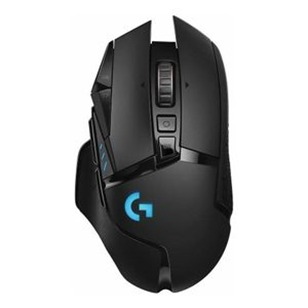
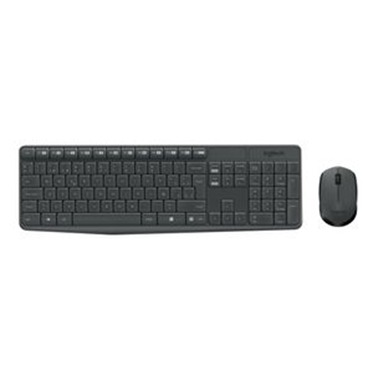
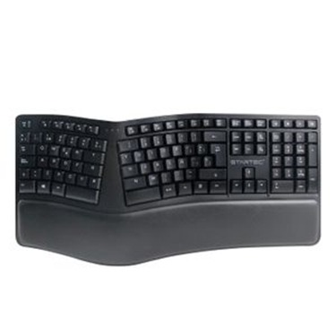
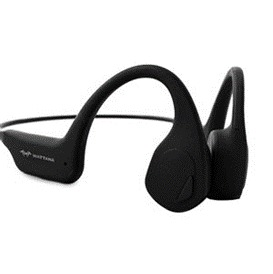
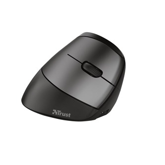
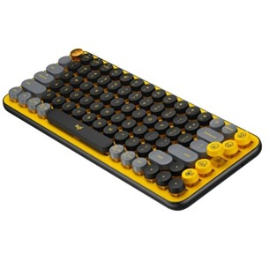
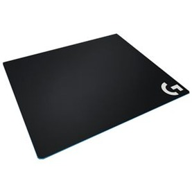
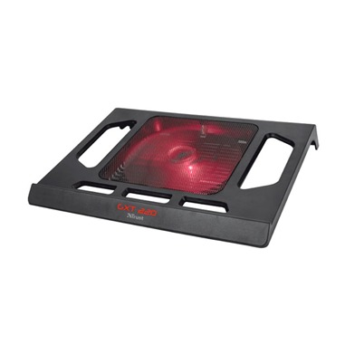
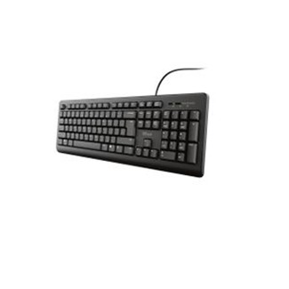

MOUSE GAMING LOGITECH G502
$ 449.900El mouse G502 es todo un icono que ha ocupado las primeras posiciones de las listas generación tras generación. Y es el mouse que eligen quienes juegan en serio. Ahora, el mouse G502 se une a las filas de los mouse inalámbricos para juegos más avanzados del mundo con el lanzamiento de G502 LIGHTSPEED. LIGHTSPEED es una tecnología ultrarrápida y confiable con desempeño probado en competencia por profesionales de eSports. G502 LIGHTSPEED posee además el sensor de próxima generación HERO 16K y es compatible con POWERPLAY. Junto con esta novedosa tecnología avanzada, G502 LIGHTSPEED mantiene esa forma apreciada por todos y logra una reducción de peso de 7 gramos.

COMBO TECLADO Y MOUSE LOGITECH MK235
$79.900Tipo de conexión: Protocolo no unifying Logitech (2,4 GHz) con nano receptor USB Radio de acción inalámbrico: 10 metros / 33 pies Cifrado inalámbrico: AES (Advanced Encryption Standard) de 128 bits entre dispositivos y receptor Software compatible: Logitech SetPoint Teclado Teclas planas Altura de teclado ajustable Pila: 2 x AAA Duración de las pilas (no recargables): 36 meses Botones/Teclas especiales: 15 teclas de función accesibles a través de la tecla \"fn\" Ratón Conexión/alimentación: Botón de encendido/apagado Tecnología de sensor: Seguimiento óptico avanzado Pila: 1 x AA Duración de las pilas (no recargables): 12 meses

TECLADO ERGONOMICO STAR TEC
$128.900La estructura curva proporciona comodidad al teclear, además cuenta con 3 divisiones que te ayuda a disminuir la presión de los músculos del antebrazo, color negro clásico es un complemento perfecto para cualquier PC. Teclado ergonómico con soporte acolchado te ofrece comodidad para largas horas de trabajo, cuenta con teclas programadas para un acceso mas rápido, su diseño de domo en el teclado da una forma natural a la posición de las muñecas. Compatible con Windows / Mac OS Teclas nítidas y sensibles Impresión laser duradera Material ABS + Aluminio Indicador Led: bloqueo de Mayúsculas, bloqueo de Fn, encendido.

AUDÍFONOS DE CONDUCCIÓN ÓSEA WATTANA W-BH-X5
$77.900Audífono de conducción ósea con canal auditivo despejado, es ideal para ciclismo, trote, conducción, gimnasio por su diseño de oído abierto puedes escuchar lo que pasa en tu entorno, además cuida tu tímpano ya que no es invasivo y se mantiene limpio. Batería De Polímero De 150mah Micrófono Anti-Interferencias 40db Tiempo de reproducción: 6 horas Tiempo de carga 1.5 H Alcance 10 Mts Puerto De Carga Usb Tipo C Duración De Carga 2 Horas Peso 28 Gr

MOUSE INALAMBRICO USB TRUST BAYO DISEÑO VERTICAL (CON BATERÍA DE LITIO RECARGABLE )
$99.900Al tiempo que alivia la tensión, el mouse Bayo también ofrece la máxima libertad de movimiento. Un conector USB inalámbrico y almacenable proporciona un alcance inalámbrico de 10 m para aumentar incluso más la comodidad durante el trabajo. Provisto de una batería recargable, este mouse también es respetuoso con el medio ambiente. Su piloto LED de batería baja avisa cuando es momento de recargarlo e incluye un cable USB-C para poder seguir trabajando mientras se recarga.

TECLADO LOGITECH POP MECANICO BLUETOOTH-INALAMBRICO/LOGI BOLT AMARILLO-NEGRO FUNCIÓN EMOJIS
$ 410.900Teclado Logitech PoP Mecanico Bluetooth-Inalambrico ofrece ocho teclas de emojis intercambiables que puedes combinar* como quieras según tu estado de ánimo. Las puedes asignar a cualquier emoji existente, mediante software Logi Options+, o puedes pulsar la tecla de menú de emojis para elegir uno mientras charlas con tus amigos. Disfruta de una escritura casi adictiva con teclas mecánicas al estilo de las de las máquinas de escribir. Exprésate en varios dispositivos a la vez, mediante las teclas Easy Switch de POP Keys, que te permiten alternar con una sola pulsación entre 3 dispositivos emparejados simultáneamente, Tecnología inalámbrica Bluetooth de bajo consumo,Requiere: Puerto USB disponible, compatible Windows 10,11 o posterior, macOS 10.15 o posterior, Chrome OS™ 1, Batería: 2 x AAA. Tipo de conexión: Tecnología inalámbrica Bluetooth de bajo consumo (Bluetooth 5.1)

PAD MOUSE LOGITECH G640 FLEXIBLE/TALLA L/40X46CM/ 943-000088
$ 66.900Fricción de superficie moderada Hecho para el control Al usar valores de dpi bajos te beneficias de la resistencia moderada que los pies del mouse encuentran al iniciar o detener un movimiento rápido o repentino como suele suceder en los juegos de dpi bajos. G640 cuenta con una superficie tratada al calor a 200 ° C para proporcionar la cantidad de fricción justa para maniobras de juegos de dpi bajos. A juego con los sensores Logitech G El uno para el otro Tanto si se usa un mouse láser como uno óptico, G640 brinda a los jugadores la posibilidad de obtener una precisión mejorada del sensor. La superficie de G640 tiene una textura similar a la del entorno óptimo de prueba para los mouse Logitech G. Base estable de goma Una base ganadora La base de goma sobre la que se asienta la tela ayuda a mantener la superficie flexible en su lugar y evita arrugas ante el avance del mouse que podrán interferir con el movimiento uniforme.

BASE REFRIGERANTE GAMER TRUST GXT 220 KUZO 1 VENTILADOR NEGRO
$ 59.900Mantiene su ordenador portátil refrigerado para aumentar el rendimiento,Ventilador muy grande iluminado en rojo,Ventilador silencioso alimentado por USB,Para ordenadores portátiles de hasta 17,3”.

TECLADO ALAMBRICO TRUST PRIMO CON TECLAS SILENCIOSAS Y RESISTENTE A LOS DERRAMES
$ 44.900Teclado de tamaño completo con teclas silenciosas y diseño resistente a los vertidos
✕

NIKE MODEL 1
Descripción Modelo 1
$ 130